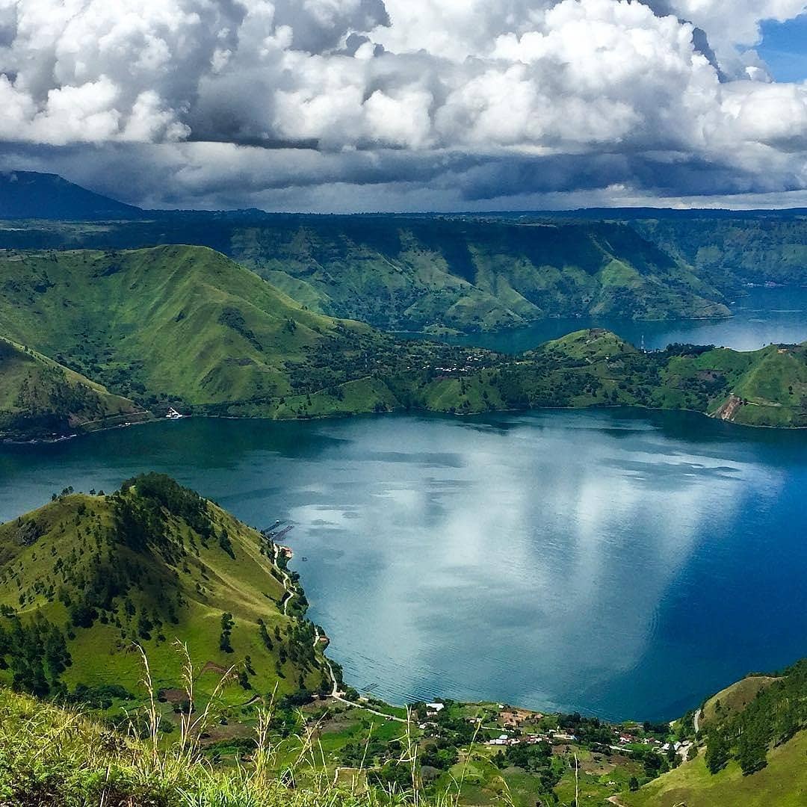
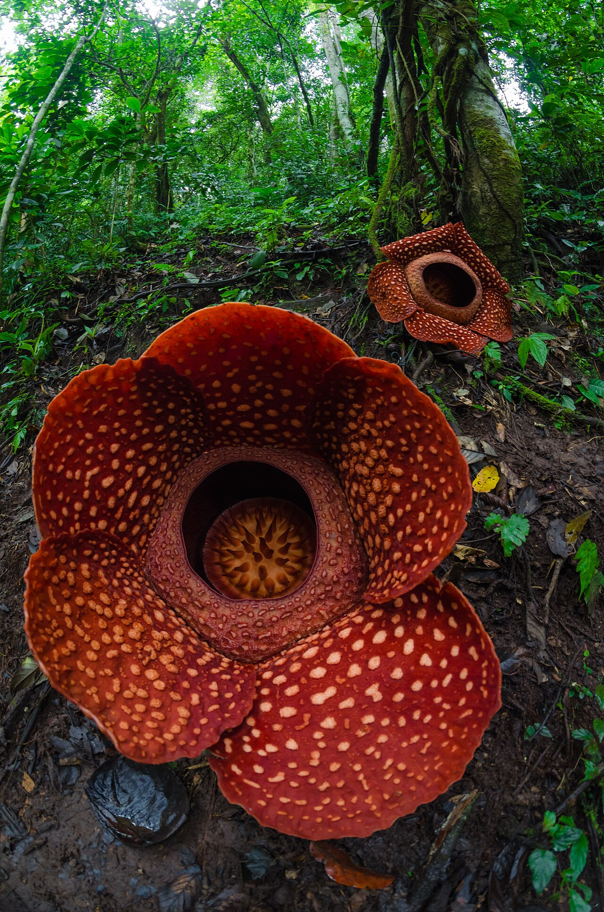
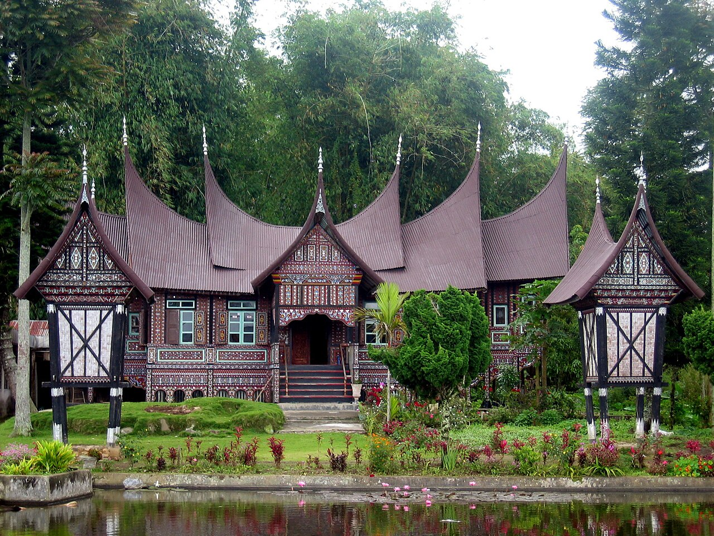

Top Attractions
Must-See in Sumatra

Bukit Lawang — Orangutan Jungle
Trek through Gunung Leuser rainforest to see wild orangutans. 2-day/1-night treks include river tubing back to town.

Lake Toba & Samosir Island
The world's largest volcanic lake. Relax on Samosir Island, visit Batak villages, and learn about the unique Batak culture.

Rafflesia Bloom
See the world's largest flower (up to 1m diameter) in Bengkulu or Kerinci. Bloom season: Nov-Jan, unpredictable timing.

Padang & Minangkabau Culture
Capital of Indonesian cuisine. Eat Nasi Padang, visit the stunning Rumah Gadang traditional houses in Bukittinggi.

Harau Valley
Dramatic granite cliffs, waterfalls, and rice paddies near Payakumbuh. A quieter alternative to Bali's rice terraces.

Mentawai Islands
World-class surfing with consistent swell year-round. Remote, pristine beaches. Boat charters from Padang.